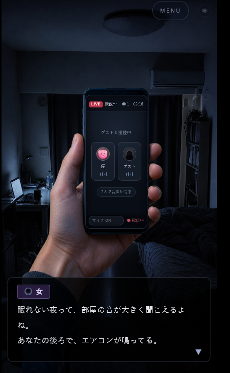
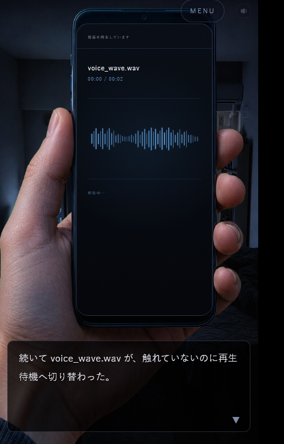
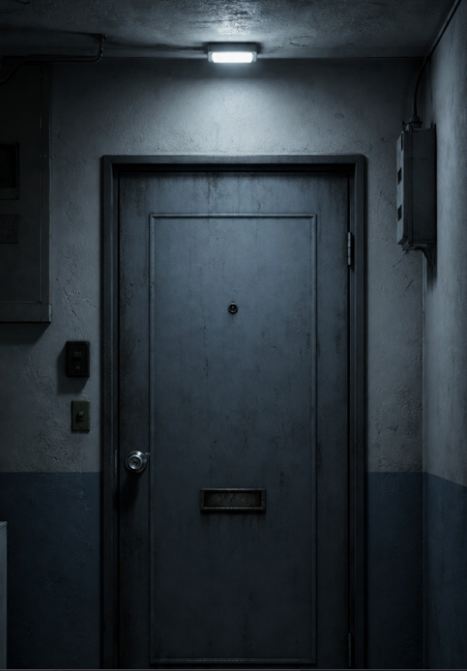

UPDATE ／ フルボイス版のみ
特別ルート「観測禁止」追加
2026年9月21日（月）から
ロマ子様からのプレゼントです。メニュー画面に追加された「観測禁止」ボタンから、特別ルートを遊べます。エンディングが1本追加されます。
対象：フルボイス版（全力応援版を購入した方も遊べます）。製品版・体験版には含まれません。
深夜三時、また同接1。
配信の向こうに現れた、
記録に残らない女。
彼女は、調べられるほど
鮮明になっていく。
量子力学の「観測」をモチーフにした、静かな心理ホラーノベル。
今度は、こちらから見ています。
NEWS
UPDATE ／ フルボイス版のみ
2026年9月21日（月）から
ロマ子様からのプレゼントです。メニュー画面に追加された「観測禁止」ボタンから、特別ルートを遊べます。エンディングが1本追加されます。
対象：フルボイス版（全力応援版を購入した方も遊べます）。製品版・体験版には含まれません。
RESALE ／ 観測禁止記念
2026年9月21日（月）から9月30日（水）まで
2026年9月30日（水）まで再販中
「観測禁止」の追加を記念して、2026年8月31日に販売を終了したフルボイス版を、期間限定で再販します。
8,100円（税込）
深夜三時。
ただ喋る練習をするつもりで、僕は音声配信を始めた。
同接ゼロだった画面に、ひとりの女が現れる。
「こんばんは。眠れないんですか？」
顔も名前も明かさない彼女との、奇妙に穏やかな会話。
通話が切れる直前、女はひとつだけ警告を残した。
「私のことは、決して調べないでください」
翌日、配信アーカイブから、女の声だけが消えていた。
代わりに残されたのは、見覚えのない写真、欠損した音声、そして住所。
記録を開くほど、彼女の存在は鮮明になっていく。
同時に、僕の部屋は少しずつ信用できなくなっていった。
観測していたのは、
本当に僕のほうだったのか。

FREE PLAY
体験版は、ノーマルエンドまで無料でプレイできます。プレイ時間の目安は約15分です。
ブラウザで起動でき、スマートフォンでもPCでもプレイできます。
プレイURLは、罵尻ロマ子様のSubstack登録者へお届けします。
まずは体験版で、この記録を開いてください。
MULTI ENDING

体験版で辿り着けるのは、ひとつの結末です。
製品版では、あなたが何を見て、何を選び、何を信じたかによって、物語の行き先が変わります。
同じ記録を観測しても、見えてくる真実はひとつではありません。
選択の違いによって、彼女の存在は異なる輪郭を持ち始めます。
この作品のテーマである「観測」を、マルチエンディングによって、さらに深く体験してください。
フルボイス版と全力応援版では、そのすべてを罵尻ロマ子様のフルボイスで楽しめます。フルボイス版は、2026年9月21日から9月30日まで期間限定で再販します（全力応援版は2026年8月31日をもって販売終了）。
小さな息遣い。
近すぎる肉声。
わずかな沈黙。
結末が変わるだけではありません。
声によって、同じ場面の意味と距離まで変わっていきます。
VOICE SAMPLE
本編で使われている、罵尻ロマ子様の声のサンプルです。約28秒。イヤホンでの再生をおすすめします。
0:00 / 0:28
この声が入るのは、フルボイス版と全力応援版です。フルボイス版は、2026年9月21日から9月30日まで期間限定で再販します。全力応援版は、2026年8月31日をもって販売を終了しました。体験版と製品版に、ボイスは付きません。
ロマ子様にとって、初のフルボイス付きゲームです。
OBSERVER BENEFITS
フルボイス版・全力応援版の特典です。フルボイス版は、2026年9月21日から9月30日まで期間限定で再販します。全力応援版は、2026年8月31日をもって販売を終了しました。
01
希望者の名前を、クレジットへ記載します。「この作品を観測した人」として記録されます。
対象：フルボイス版／全力応援版
02
ゲーム開発裏話 第一話・第二話のアーカイブを、2026年9月30日まで視聴できます。
対象：フルボイス版／全力応援版
03
ロマ子様直筆のデジタルメッセージをお届けします。
対象：全力応援版のみ
04
約20分の限定ASMRボイスが付属します。
対象：全力応援版のみ
DEVELOPMENT STORIES
フルボイス版・全力応援版の購入者へ向けて、開発の裏側をロマ子様が話す集まりです。第一話・第二話とも、アーカイブを2026年9月30日まで視聴できます（両プランの購入者限定。再販期間中にフルボイス版を購入した方も対象です）。
アーカイブ配信中（9月30日まで）
第一話に続いて、開発の裏側を話す第二話を、Discordの購入者限定ボイスチャットで実施しました。
アーカイブは、フルボイス版・全力応援版の購入者限定で、2026年9月30日まで視聴できます。
アーカイブ再公開中（9月30日まで）
3時間を超える大ボリュームの、ゲーム開発裏話配信を実施しました。
開発秘話と、作品に込めた科学モチーフを、ロマ子様が語っています。
購入者向けの限定公開は2026年8月31日で一度終了しましたが、2026年9月30日まで再公開しています。
PRODUCT
無料
810円（税込）
9月21日〜30日 再販
8,100円（税込）
2026年8月31日で販売を終了しましたが、2026年9月21日から9月30日まで期間限定で再販します。
販売終了
2026年9月30日をもって、再販を終了しました。
特典
販売終了
2026年8月31日をもって販売を終了しました。
当時の特典
FAQ
ノーマルエンドまで無料でプレイできます。
いつでも購入できるのは、体験版（無料）と製品版（810円）です。製品版は、マルチエンディング全編をプレイできます。ロマ子様のフルボイスが入るフルボイス版（8,100円）は、2026年9月21日から9月30日まで期間限定で再販します。さらに直筆デジタルメッセージ・限定ASMRボイスが付く全力応援版は、2026年8月31日をもって販売を終了しました。
フルボイス版のメニュー画面に追加された、特別ルートへの入口です。エンディングが1本追加されます。2026年9月21日（月）から、フルボイス版・全力応援版の購入者が追加費用なしで遊べます。製品版には含まれません。
体験版はノーマルエンドまでです。製品版では、複数の結末を楽しめます。
目安として、体験版は約15分、製品版は全エンディング回収までで約1時間です。
ブラウザで起動でき、スマートフォンとPCでプレイできます。
Substackへ登録すると、公開時にプレイURLが届きます。
BOOTHの商品ページと配布形式が確定後、ここへ掲載します。
いいえ。掲載名、申込方法、締切、使用できない表記は購入者向けに案内します。

あますことなく観測してくれたみなさんです。
観測者の記録は、8月10日から追加されます。